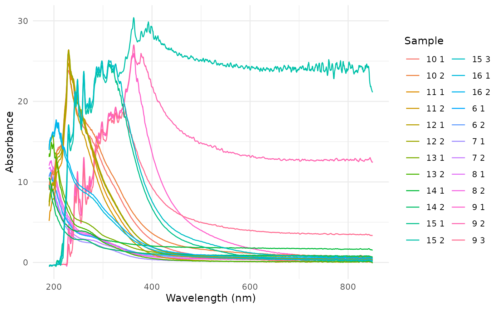

Importing NanoDrop Spectral Data
Source:vignettes/nanodrop-data-import.Rmd
nanodrop-data-import.RmdThe export format
A NanoDrop One UV-Vis export holds one block per measurement: the
sample name, a timestamp, a Wavelength (nm) header, some
// calibration lines, and then wavelength/absorbance
pairs:
6 1
5/14/2024 5:04 PM
Wavelength (nm) 10mm Absorbance
//WLCalib: Shift 0.22333
...
//QSpecEnd:
190.0 10.666
190.5 10.782
...read_nanodrop() turns this into a long table with one
row per measurement and wavelength.
Reading one file
library(nanodRop)
path <- system.file("extdata", "nanodrop_example.tsv", package = "nanodRop")
spectra <- read_nanodrop(path)
head(spectra)
#> samps waves abs measurement timestamp
#> <char> <num> <num> <int> <char>
#> 1: 6 1 190.0 10.666 1 5/14/2024 5:04 PM
#> 2: 6 1 190.5 10.782 1 5/14/2024 5:04 PM
#> 3: 6 1 191.0 10.853 1 5/14/2024 5:04 PM
#> 4: 6 1 191.5 10.877 1 5/14/2024 5:04 PM
#> 5: 6 1 192.0 10.866 1 5/14/2024 5:04 PM
#> 6: 6 1 192.5 11.105 1 5/14/2024 5:04 PMThe columns are:
-
samps: sample name as typed on the instrument -
waves: wavelength (nm) -
abs: absorbance -
measurement: position of the block in the file. If you measure the same sample twice, the two measurements stay separate. -
timestamp: timestamp line as written by the instrument
Use min_wv and max_wv to keep part of the
spectrum:
visible <- read_nanodrop(path, min_wv = 400, max_wv = 700)
range(visible$waves)
#> [1] 400 700Re-measured samples
Some labs mark a re-measurement by adding a suffix to the sample
name, for example "A" followed later by "Ae".
Set remeasure_suffix to have the re-measurement replace the
original:
read_nanodrop(path, remeasure_suffix = "e")Only names whose original is also in the file are affected. A sample
called "Rinse" stays "Rinse" unless there is
also a sample called "Rins".
Reading a folder of exports
read_nanodrop_dir() reads every .tsv file
in a folder and adds a file column:
folder <- system.file("extdata", package = "nanodRop")
all_spectra <- read_nanodrop_dir(folder)
unique(all_spectra$file)
#> [1] "nanodrop_example.tsv"Plotting
library(ggplot2)
ggplot(spectra, aes(waves, abs, colour = samps, group = measurement)) +
geom_line() +
labs(x = "Wavelength (nm)", y = "Absorbance", colour = "Sample") +
theme_minimal()
Next steps
See vignette("advanced-analysis") for computing
absorbance ratios and differences with parse_waves().